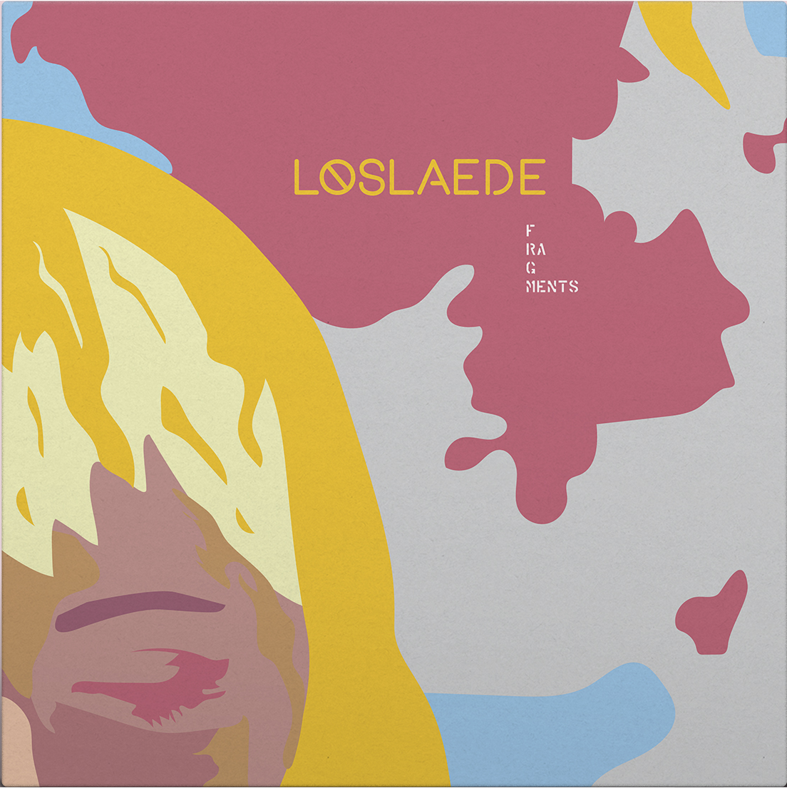
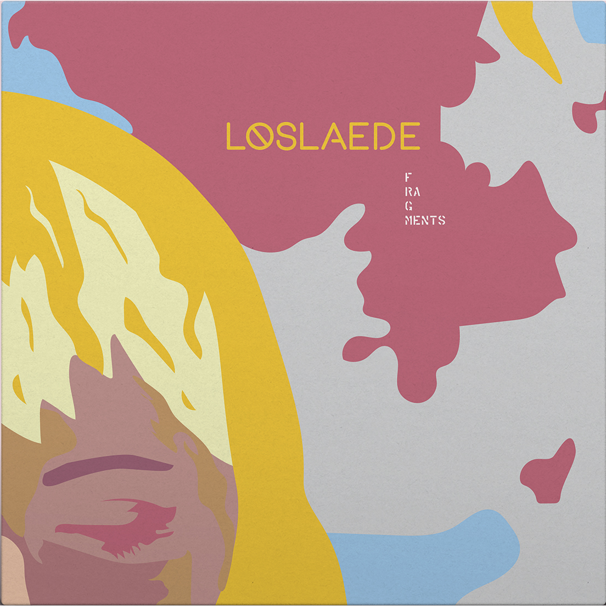
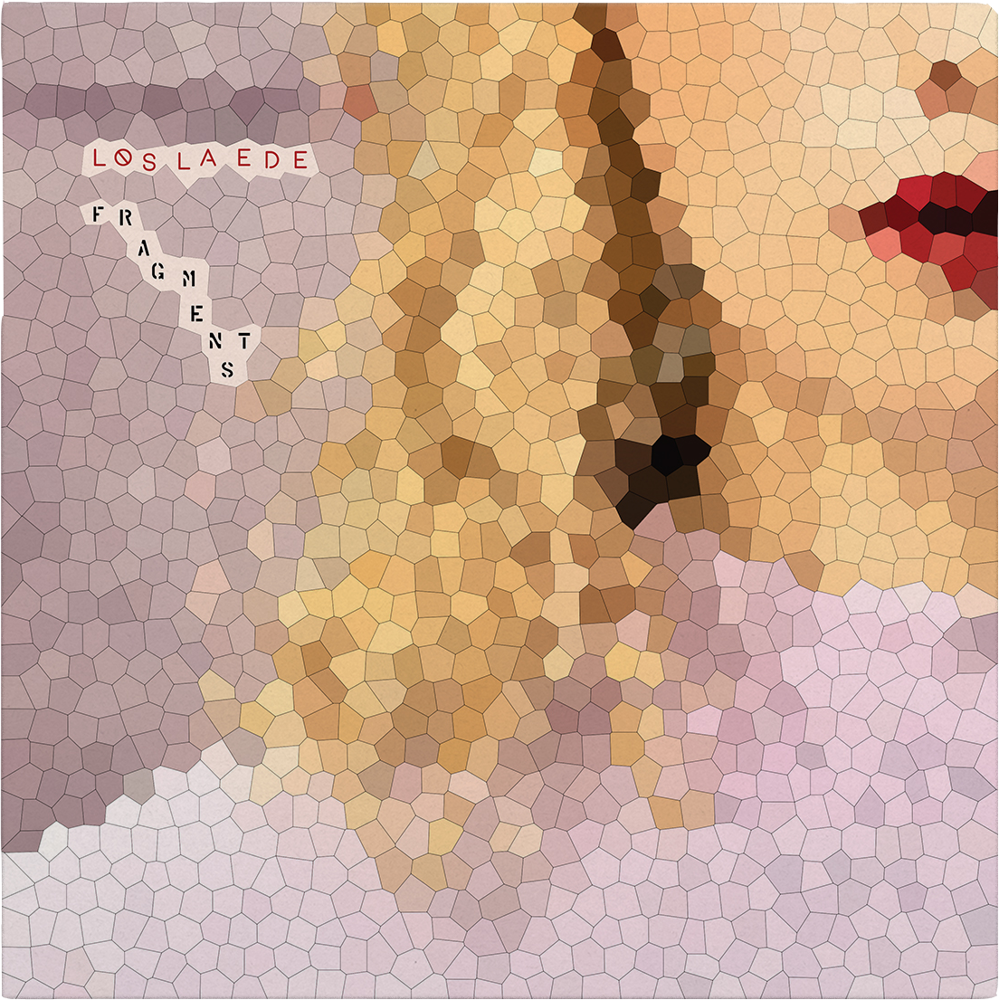

Løslade werd geboren in 1995 en is 22 jaar oud.
Ze groeide op als het enige meisje ineen gezin
met drie broers in een klein Deens vissersdorpje:
Sønderborg. De mannen werken er in de haven en
de vrouwen blijven thuis; er is geen sprake van
emancipatie.
Løslade voelde al op jonge leeftijd aan dat dit niet haar leefwereld was. Ze gaat als
eerste van haar familie verderstuderen in Kopenhagen. Dit trekt een hele wereld voor
haar open. Ze komt via studentenfeestjes in contact met de drum & bass scene die in
de jaren '90 ook Kopenhagen bereikt had.
Ze raakt verdiept in dit milieu, maar voelt weer aan dat deze ‘underground’ wereld
gedomineerd wordt door mannelijke dj’s. Ze wilt hier dan ook meteen verandering in
brengen en als eerst vrouwelijke DnB artieste anderen inspireren om het genre volledig
open te trekken naar het grote publiek, met extra aandacht voor vrouwen. Ze
doorbreekt de stereotype drum & bass ‘skater/fluo stijl’ met haar vrouwelijke uiterlijk,
maar heeft wel gekleurd haar en staat vol met tatoeages.
Ze is gespecialiseerd in het DnB subgenre ‘Ambient’, een rustigere en meer atmosferische
vorm. Na haar studies verhuist ze naar Londen om meer ervaring op te doen. Løslade
maakt al snel naam in de DnB community door haar ultra unieke stijl en wordt getekend
door ons label, Hinshu Records, als jong en aanstormend talent.
 

Framgents(1)
Fragments(2)
€34,99
€34,99

Fragments(3)
Fragments(4)
€34,99
€34,99